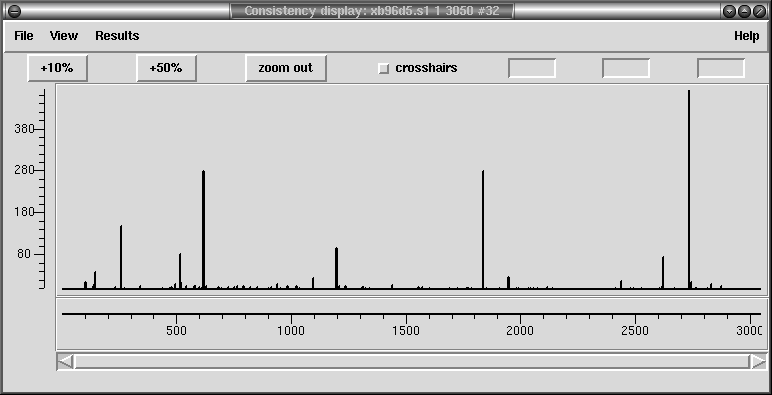

At present this is a rather specialist function written for a particular in-house purpose. This plot relates very closely to the 2nd-Highest Confidence plot (see section 2nd-Highest Confidence), but it also takes into account depth information.

Specifically as assumption is made that a contig may consist of two alleles with approximately 50/50 ratio. Any discrepancies visible by looking at the second highest confidence value should therefore also be backed up by a 50/50 split in sequence depth.